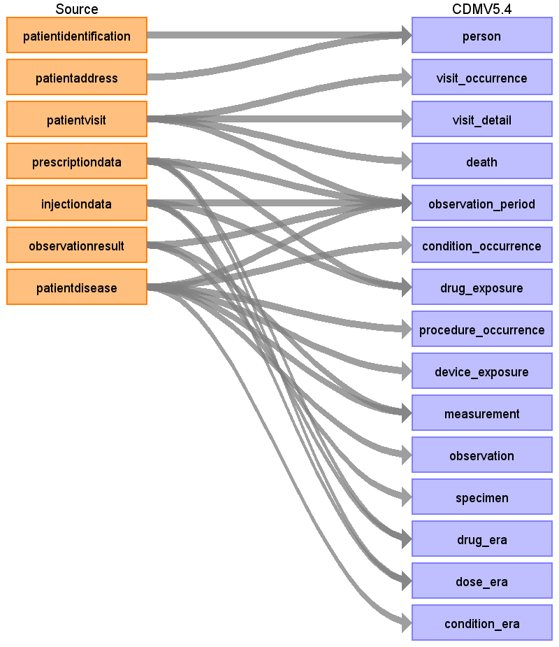

<h1>Source Data Mapping Approach to CDMV5.4</h1>



<h2>Contents</h2>

<ul><a href="person.html">person</a></ul>

<ul><a href="visit_occurrence.html">visit_occurrence</a></ul>

<ul><a href="visit_detail.html">visit_detail</a></ul>

<ul><a href="death.html">death</a></ul>

<ul><a href="observation_period.html">observation_period</a></ul>

<ul><a href="condition_occurrence.html">condition_occurrence</a></ul>

<ul><a href="drug_exposure.html">drug_exposure</a></ul>

<ul><a href="procedure_occurrence.html">procedure_occurrence</a></ul>

<ul><a href="device_exposure.html">device_exposure</a></ul>

<ul><a href="measurement.html">measurement</a></ul>

<ul><a href="observation.html">observation</a></ul>

<ul><a href="specimen.html">specimen</a></ul>

<ul><a href="drug_era.html">drug_era</a></ul>

<ul><a href="dose_era.html">dose_era</a></ul>

<ul><a href="condition_era.html">condition_era</a></ul>

<ul><a href="source_appendix.html">source_appendix</a></ul>

